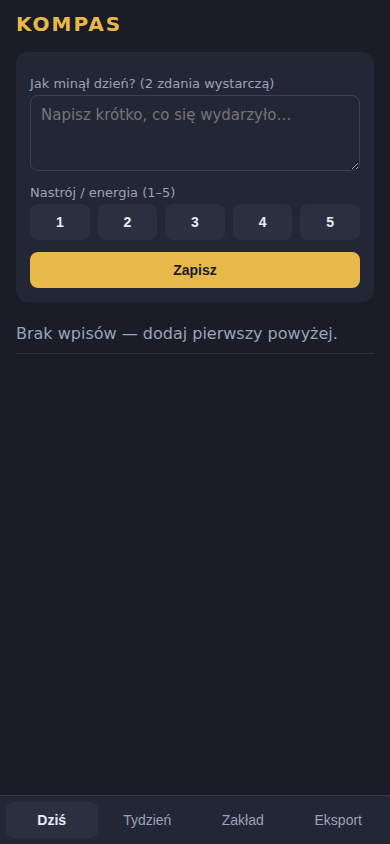
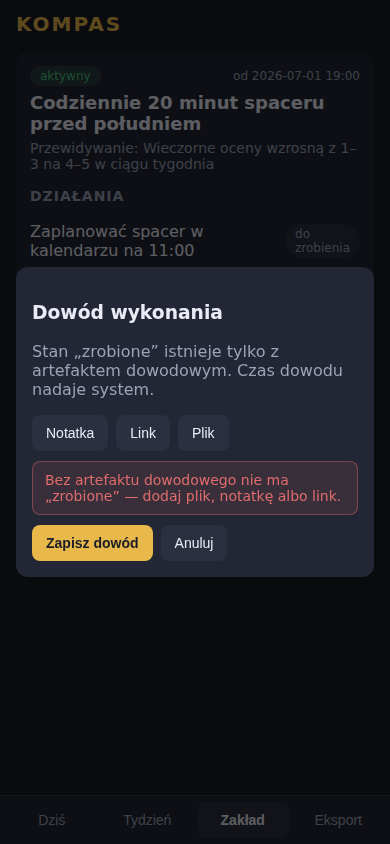
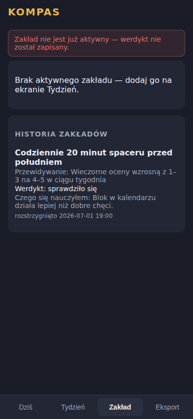

KOMPAS domyka Twoje decyzje: wpis dzienny → jeden zakład na tydzień → działania zamykane wyłącznie dowodem → wynik vs Twoje przewidywanie. Po tygodniu widzisz czarno na białym, czy plan działa — czy tylko ładnie wygląda.
Wypróbuj 7 dni za darmo Bez karty i bez konta — dane zostają na Twoim urządzeniu. Potem 29 zł/mies.


Stan „zrobione” istnieje tylko z artefaktem dowodowym. To nie jest funkcja — to fundament wpisany w bazę danych. Nie da się go ominąć z poziomu aplikacji, a eksport Twojego miesiąca nigdy nie pokaże jako wykonane czegoś, na co nie ma dowodu.
Na Twoim urządzeniu, w bazie SQLite zapisywanej w przeglądarce. Nie mamy serwera, na który cokolwiek by trafiało. Konsekwencja: jeśli wyczyścisz dane przeglądarki bez eksportu — przepadną. Dlatego eksport jest jednym klikiem.
Aplikacja poprosi o wykupienie dostępu. Twoje dane zostają u Ciebie niezależnie od decyzji — zawsze możesz je wyeksportować.
Jedno i drugie — to PWA, działa w każdej nowoczesnej przeglądarce i instaluje się jak aplikacja. Uwaga: dane są per urządzenie (bez chmury nie ma synchronizacji — świadomy kompromis za prywatność).
Nie. Sednem jest dowód, nie technologia. AI (propozycja zakładu z analizy tygodnia) to opcjonalny dodatek na Twój własny klucz — a bez niego dostajesz uczciwie oznaczoną statystykę lokalną.